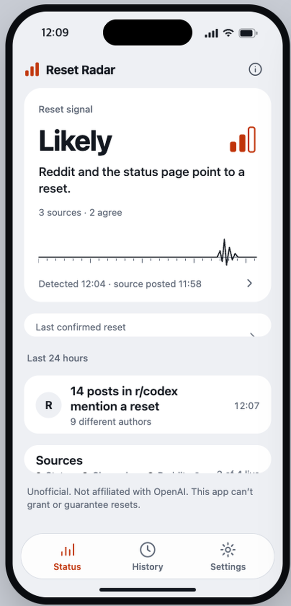
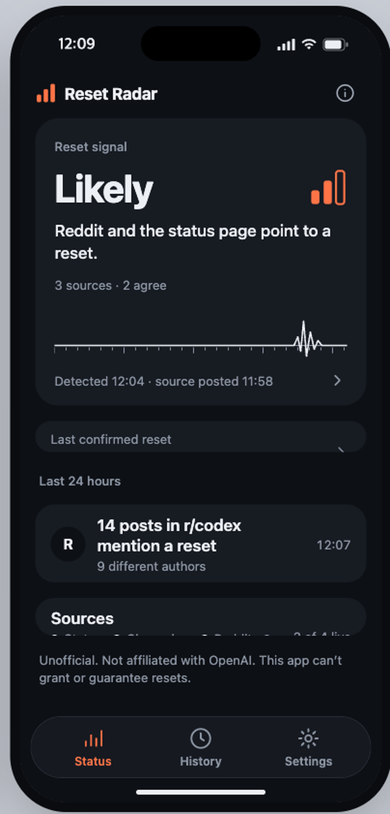
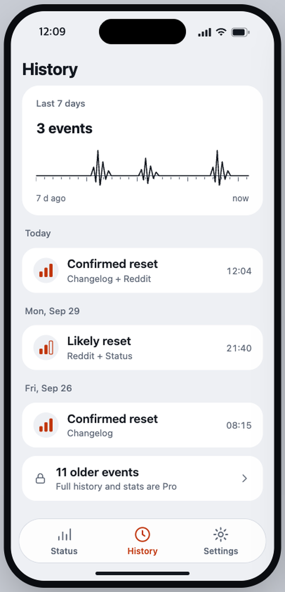
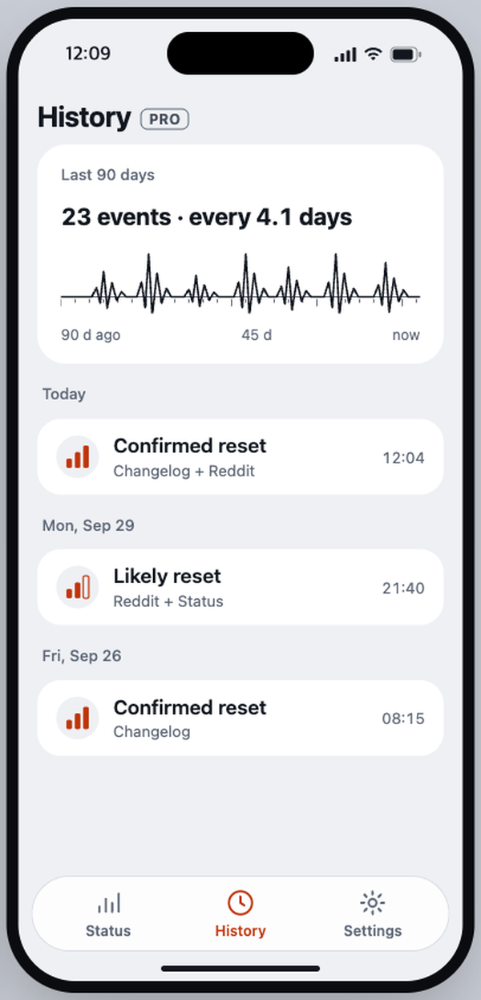

한도에 자주 걸리는 사람을 위해
AI 코딩 한도, 풀리면 바로 알림.
AI 코딩 한도 언제 풀리지? 지피티 리셋 레이더는 사용량 한도 리셋에 대한 공개 신호를 지켜보다가 감지되면 푸시를 한 번 보냅니다. 알림마다 근거가 어디인지 같이 보여줍니다.

샘플 데이터로 만든 디자인 목업입니다. 스토어 스크린샷이 아닙니다.
알림마다 출처가 있습니다. 추측은 없습니다.
지피티 리셋 레이더는 공개된 네 곳을 봅니다. 공식 페이지가 말해야만 「확정」이 됩니다. 사람들의 글은 신호를 올릴 수는 있어도 확정하지는 못합니다.
리셋당 푸시 한 번, 감지됐을 때만
매일 오는 알림은 없습니다. 아무 일 없으면 폰은 조용합니다.

상태 페이지
공식. 인시던트 시작·해소는 보강 신호이지 리셋 공지가 아닙니다.
체인지로그
공식. 한도 리셋을 언급한 새 항목만 「확정」을 만들 수 있습니다.
공개 게시글. 서로 다른 작성자 여럿이 리셋을 말하면 「유력」, 글 하나면 「주시」입니다.
X (가능할 때)
서비스가 접근 권한을 가졌을 때만 봅니다. 없으면 조용한 0이 아니라 「확인 불가」로 표시합니다.
네 단계, 글자와 막대 개수로 표시
퍼센트도, 언제 풀린다는 예측도 없습니다.
리셋이 실제로 얼마나 자주 나는지 보세요
감지된 리셋 전체를 근거와 함께 타임라인으로 봅니다. 최근 7일은 무료입니다.


샘플 데이터로 만든 디자인 목업입니다. 스토어 스크린샷이 아닙니다.
무료로 쓰고, 더 필요하면 한 번만 결제합니다.
구독도 광고도 없습니다.
| 무료 | Pro (일회성) | |
|---|---|---|
| 현재 상태와 출처 목록 | 예 | 예 |
| 리셋 푸시 알림 | 예 | 예 |
| 기록 | 최근 7일 | 전체 기록과 트레이스 |
| 홈·잠금화면 위젯 | 아니오 | 예 |
| 단계·출처별 알림 조건, 방해 금지 시간 | 아니오 | 예 |
| 서비스 상태 인시던트 알림 | 아니오 | 예 |
Pro 는 일회성 결제이고 구독이 아닙니다. 가격은 App Store 에서 내 통화로 표시됩니다. 따로 있는 선택형 팁은 아무 기능도 열지 않습니다.
못 하는 것
- 공식 앱이 아니며 OpenAI 와 관련이 없습니다.
- 리셋을 주거나 연장하거나 보장할 수 없습니다. 공개 신호가 리셋을 가리킬 때 알려줄 뿐입니다.
- 감지는 공개 신호에 기대므로 놓치거나 틀릴 수 있습니다. 정확도는 아직 측정하지 않았습니다.
- Reddit·X 신호만으로는 「확정」으로 표시하지 않습니다.
자주 묻는 질문
계정이 필요한가요?
아니요. 가입이 없습니다. 알림 권한은 알림을 켜는 카드를 눌렀을 때만 묻습니다.
제 정보 중 무엇을 저장하나요?
알림을 보내기 위한 푸시 토큰, 언어, 알림 조건입니다. 설정에서 전부 삭제할 수 있습니다. 자세한 내용은 개인정보처리방침에 있습니다.
농담 카운트다운 사이트와 뭐가 다른가요?
그런 곳은 근거 없이 숫자만 보여줍니다. 지피티 리셋 레이더는 알림마다 근거 글·페이지를 보여주고, 응답이 없는 소스는 「확인 불가」로 표시합니다.
무료인가요?
핵심 기능은 무료입니다. 위젯·알림 조건·전체 기록이 필요하면 Pro 를 한 번 결제합니다.